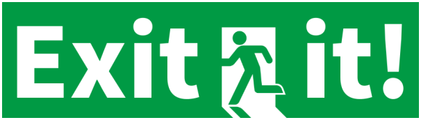

atsuto - works
portfolio
github
Unityroom

GAME
非常口マークを題材にランゲーム化しました。 せまってくる炎から逃げつつ、障害物をよけてハイスコアを目指そう！ このゲームの最大の特徴は3次元と2次元を切り替える次元切り替えです。 視点を変えればコースも変わります。行き詰まった時は積極的に使っていきましょう。
このゲームは2023年度奈良高専祭(2023/11/04～2023/11/05)の展示物として作成した作品です。 Windows版を下のボタンのリンクからダウンロードできます。
高専祭に展示しているものではスコア記録、ランキング表示機能を追加しており、 高専祭2日間の間でハイスコアの人の名前が記録されます。
ダウンロード
PROGRAM
このゲームはUnityを用いて作成されました。 プロジェクトファイルは
こちらのGithubレポジトリ
で公開しています。
ソースコードは主に「Assets/Scripts」フォルダ内にあります。3Dモデルや楽曲は自作です。
HAL研究所1day仕事体験作品提出シートPDFファイル